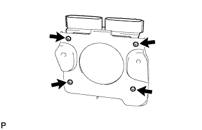
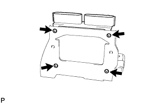
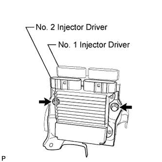
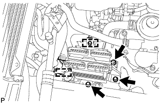
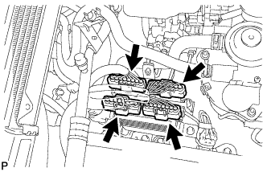

INJECTOR DRIVER > INSTALLATION |
| 1. INSTALL INJECTOR DRIVER |
 |
Install the No. 2 injector driver and injector driver bracket to the No. 2 injector driver bracket with the 4 screws.
 |
Install the No. 1 injector driver and injector driver bracket to the No. 1 injector driver bracket with the 4 screws.
 |
Install the No. 2 injector driver bracket to the No. 1 injector driver bracket with the 2 bolts.
 |
Install the injector driver assembly with the 3 bolts.
Attach the fuel hose clamp and wire harness clamp.
 |
Connect the 4 injector driver connectors.
| 2. CONNECT CABLE TO NEGATIVE BATTERY TERMINAL |
Connect the cables to the negative (-) main battery and sub-battery terminals.